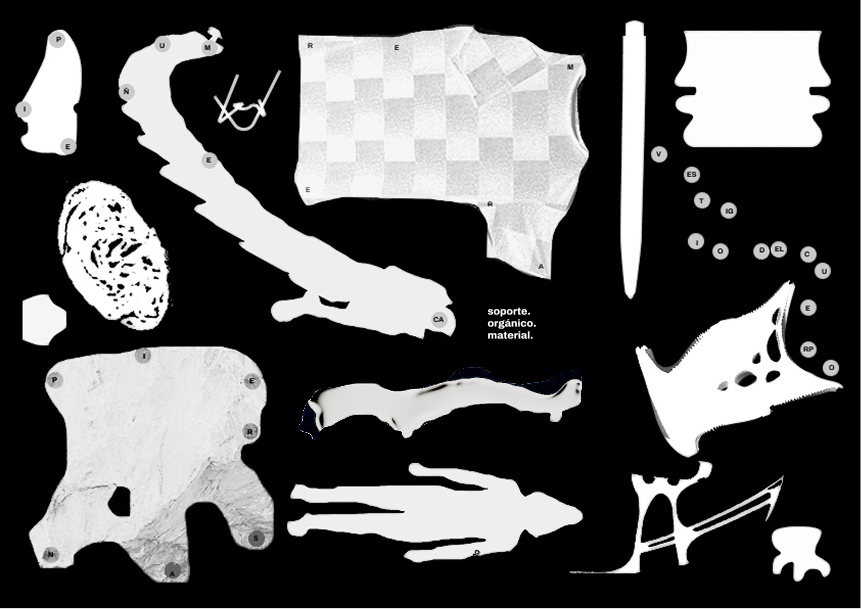
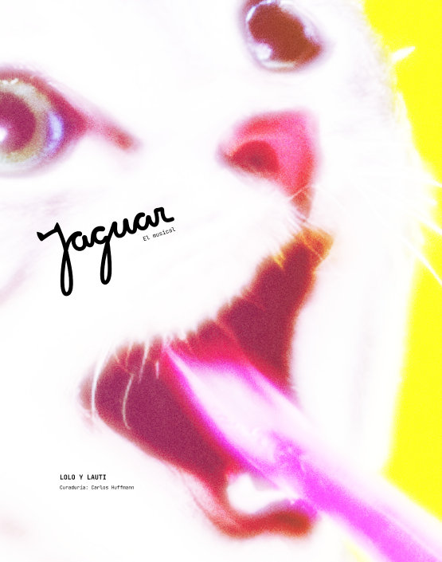
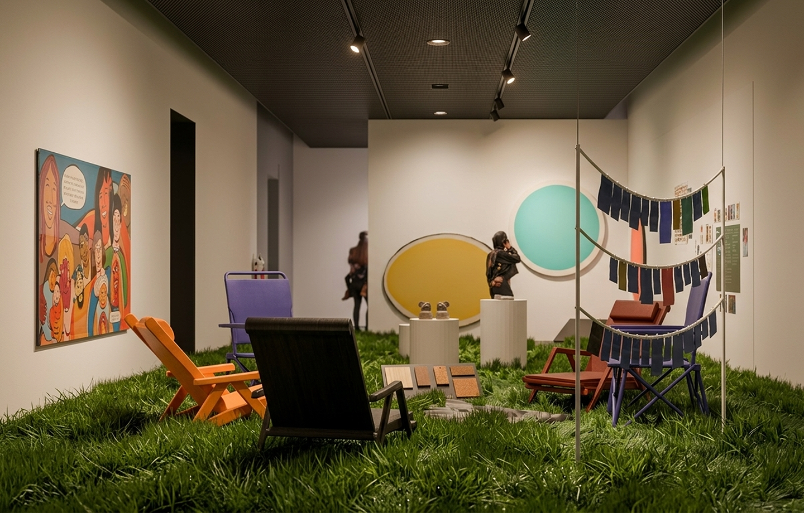
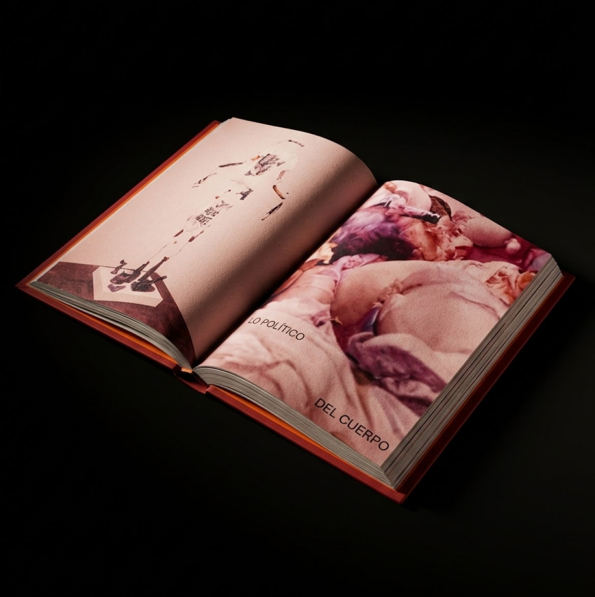
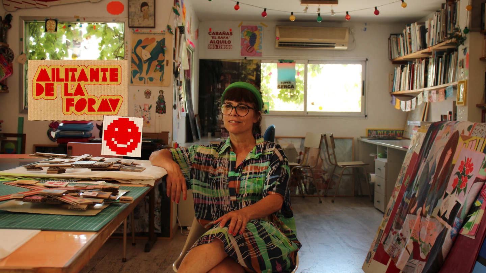
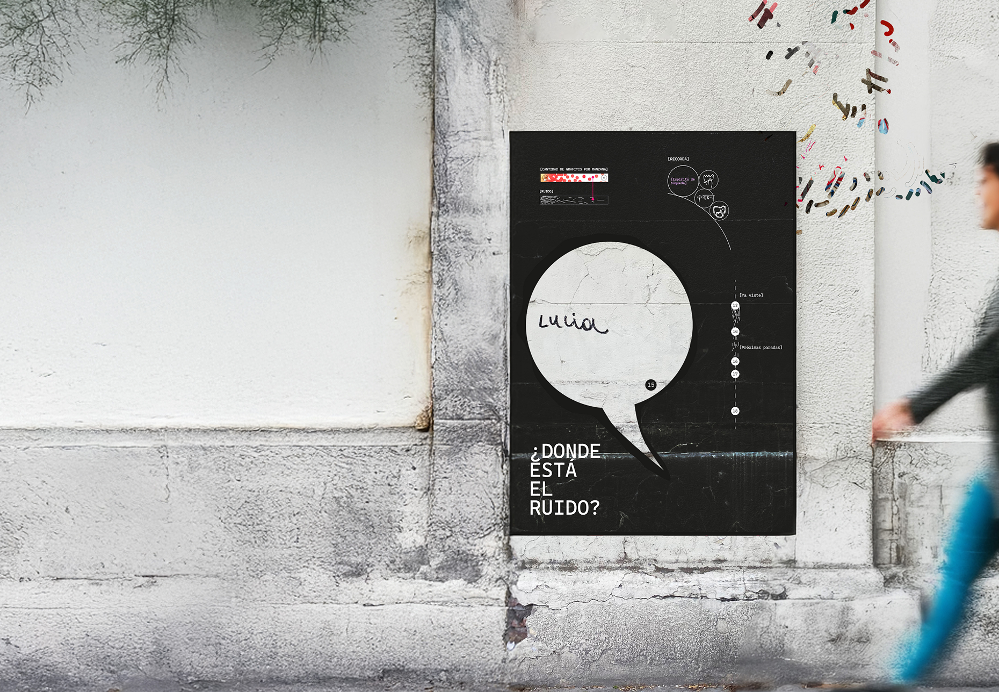
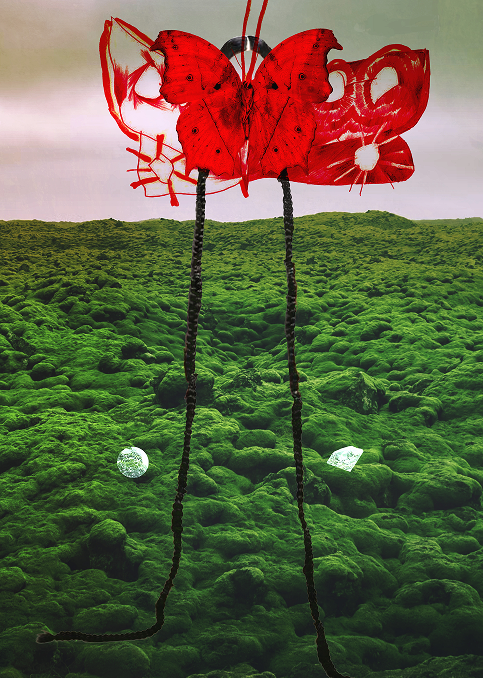
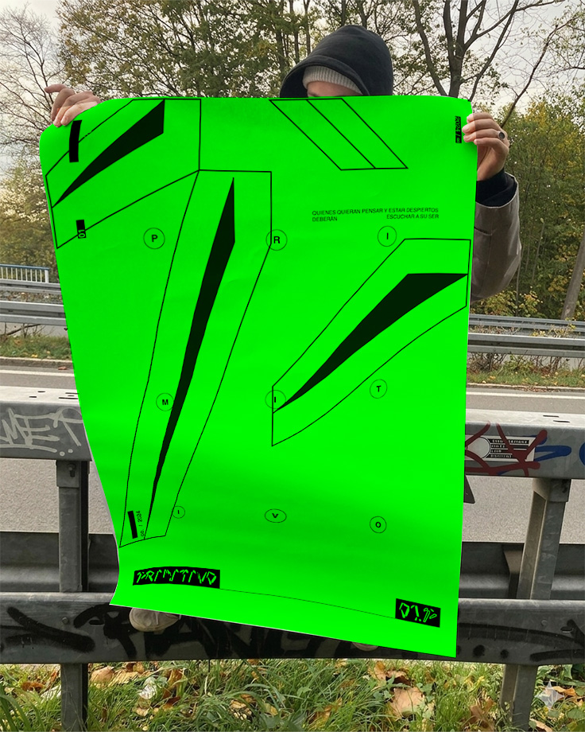

SOMA: Soporte Material

Proyecto de identidad visual para SOMA, explorando la dualidad entre lo orgánico y lo digital a través de formas en tensión.
Jaguar: Un musical del Centro de Arte UTDT

Proyecto de identidad visual para JAGUAR, explorando la dualidad entre lo orgánico y lo digital a través de formas en tensión.
Ronda Redonda: Re-diseño de la exposición de arte “Aprendizaje Infinito” expuesta en el Museo Moderno.

La muestra explora el vínculo entre diferentes pedagogías que aprovechan al arte como herramienta para expandir los limites del aprendizaje, recorriendo diferentes momentos de la historia a través de las voces de diferentes docentes, artistas y activistas.
INTELI-GENTE: Exposición sobre tecnología en el MARQ

Proyecto de identidad visual para INTELI-GENTE, explorando la dualidad entre lo orgánico y lo digital a través de formas en tensión.
Pulsos: Una exploración sobre las convergencias entre arte y diseño

Proyecto de identidad visual para PULSOS, explorando la dualidad entre lo orgánico y lo digital a través de formas en tensión.
Militante de la forma: Un documental sobre Elisa Strada.

Proyecto de identidad visual para PULSOS, explorando la dualidad entre lo orgánico y lo digital a través de formas en tensión.
¿VES EL RUIDO?: Un recorrido sensorial por la ciudad de Buenos Aires

Desarrollo de identidad visual para un evento que posee como objetivo concientizar sobre el nivel de la contaminación auditiva en la Ciudad de Buenos Aires y su vínculo directo con la contaminación visual.
El cuerpo híbrido: Un paseo virtual.

La siguiente experiencia interactiva tiene como propuesta explorar los limites del cuerpo y su relación con el entorno social, político y social que condiciona los cuerpos, pero que hoy en dia, también les permite habitar el espacio como entes despersonalizados y fragmentados. Este concepto se toma directamente del último disco de Rosalía, “Motomami”, donde el cuerpo femenino sufre un shock de identidad al ser combinado con una moto
Primitivo: sonido solo para quienes quieran conocer su verdadero ser.

La muestra explora el vínculo entre diferentes pedagogías que aprovechan al arte como herramienta para expandir los limites del aprendizaje, recorriendo diferentes momentos de la historia a través de las voces de diferentes docentes, artistas y activistas.